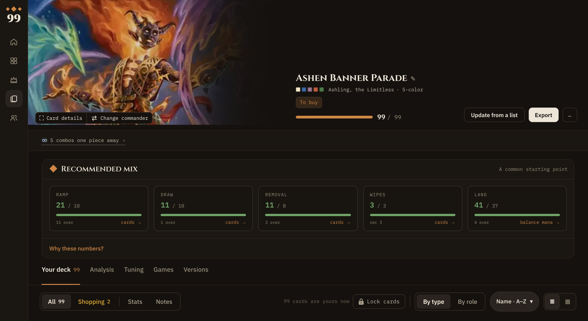
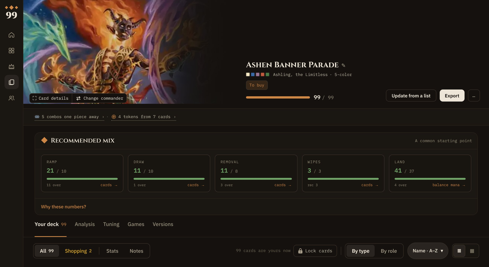
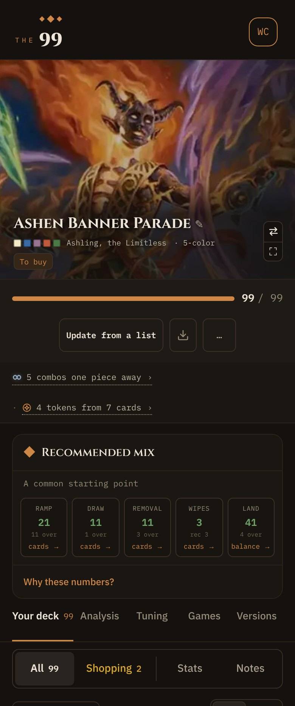

A · “4 tokens from 7 cards ›” in the status line (recommended)
A segment of the deck’s status line, after combos one piece away, drawn as that segment is (glyph, body ink, dotted rule, faint caret; 44px touch hit). The glyph is the Tokens strategy glyph in the accent ink. The press is the shipped landing (landOnDeckTokens): Your deck › All, scroll to the box, open it for this visit, focus its heading. It sits in the to-do card’s foot when the deck has a to-do, in the quiet strip otherwise (drawn here). No segment for a deck that makes no token.
BEFORE · SHIPPED
Desktop

Phone
AFTER · R1
Desktop

Phone · the segment wraps whole
